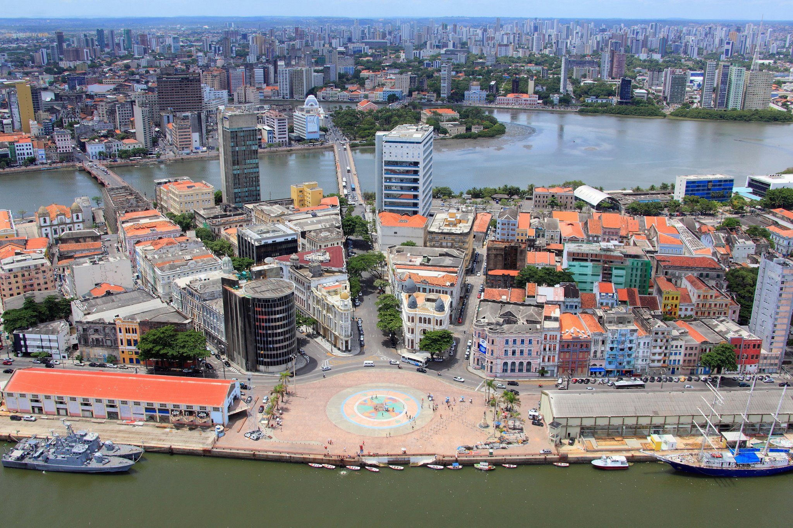

O que é o Marco Zero?
O Marco Zero é o ponto de partida para as distâncias de todas as cidades do Brasil. É um local histórico e cultural, onde você pode apreciar a beleza da cidade e sua rica história. Localizado Bairro Do Recife Antigo, e é um dos destinos turisticos mais visitados da cidade.
Ao redor do Marco Zero, você encontra construções antigas, centros culturais, o famoso Letreiro do Recife e a belíssima vista para o mar e para a Ilha de Itamaracá. O local também é palco de eventos culturais e festivais, tornando-se um ponto de encontro para turistas e moradores locais.